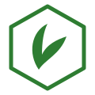

Okolica / skupnost — FLOW v3 ⬡
Poenostavljeno na dva zaslona : Okolica (landing) s preklopom
[ Ta teden | Kje si ti ] + ★ Opravilo v okolici (predloga — vsebina se prilagodi izbranemu
opravilu). Vsak tap na opravilo od koderkoli vodi na isti per-opravilo zaslon → ni »izgubljanja« po podstraneh.
Celotna »Okolica« = Tendask+ (nič trajno brezplačnega; beleženje + jedro app ostanejo free in
hranijo agregat). Ne-naročnik vidi tease (predogled vrednosti + »Preizkusi 14 dni«). Preizkus:
14 dni, brez kartice, uporabniško sprožen (+ sezonske re-trial kampanje). Cena: ~9,99 €/leto
(primarno) ali ~1,99 €/mes.
Samo dve »podstrani«: landing (dva preklopa) + per-opravilo predloga. Kontekstni vstop (Domov/opravilo)
skoči naravnost na predlogo. Ne-premium: vsak Tendask+ vpogled → 🔒 → upgrade (skupina C).
A · Vstopne točke 0–1 klik
9:41 📶 🔋
Dober dan 🌿 torek, 1. junij
⚙️
🏠 Domov
📋 Opravila
📅 Dnevnik
🪴 Vrt
⬡ Okolica
A1 · Domov — proaktivni vstop
→ detail (paradižnik) → landing Namig brez klika; tap → točno tisto opravilo. Zavihek ⬡ = brskanje.
A2 · Detajl opravila — kontekstni vstop
→ detail (gnojenje trate) Ravno ob opravilu izveš »kje si« — 1 klik na predlogo s pravim opravilom.
B · Jedro (Tendask+ uporabnik) 2 zaslona: landing s preklopom + predloga
9:41 📶 🔋
📍 Okolica ▾ ~40 vrtnarjev
ℹ️ Kako beremo te podatke › 🔒 Anonimno, vsaj 5 vrtnarjev. Točna lokacija ni nikoli razkrita.
🏠 Domov
📋 Opravila
📅 Dnevnik
🪴 Vrt
⬡ Okolica
B1 · Landing — preklop »Ta teden«
← Domov / zavihek → »Kje si ti« → detail Feed (drseče 7-dnevno). Scope chip = okolica/klima/vsi.
9:41 📶 🔋
📍 Okolica ▾
🌱 Le opravila, za katera obstaja dovolj sosedov. Tap → celotna časovnica.
🏠 Domov
📋 Opravila
📅 Dnevnik
🪴 Vrt
⬡ Okolica
B2 · Landing — preklop »Kje si ti« ← isti zaslon, drug preklop → detail ISTI zaslon kot B1, le segment »Kje si ti«. Tvoja opravila z zgoden/običajen/pozen.
9:41 📶 🔋
🌾 Prvo gnojenje trate v okolici · 📍 Okolica ▾
Kdaj · tvoj položaj
Bil si med zgodnejšimi 30 % 🌱
Do 24. mar je prvič pognojilo ~30 %. Večina začne v 14.–15. tednu.
Kako pogosto
2–4× na mesec
koliko vrtnarjev N-krat/mesec
🔥 Ta teden: nekaj sosedov gnoji › ℹ️ Kako beremo te podatke › 🔒 Med ~40 vrtnarji · opisno, ne nasvet.
B3 · ★ Predloga — primer »gnojenje trate«
← Domov / opravilo / landing → explain Vse 3 metrike na enem mestu. Vsi vstopi se stekajo SEM.
9:41 📶 🔋
🍅 Sajenje paradižnika v okolici · 📍 Okolica ▾
Kdaj · tvoj položaj
Še nisi posadil 🍅
Do zdaj je v okolici posadilo že ~70 %. Vrh je bil pretekli teden.
Oznake »ti« še ni — opravila letos nisi zabeležil.
Kako pogosto
1× na sezono
enoletnica — večina posadi enkrat spomladi.
🔥 Ta teden: pogosto v okolici › ℹ️ Kako beremo te podatke ›
B4 · ★ ISTA predloga — primer »paradižnik«
← Domov-kartica / feed Dokaz konvergence: ISTI zaslon, DRUGA vsebina (»še nisi posadil«, 1×/sezono). Ne »druga podstran«.
C · Ne-naročnik (tease → preizkus) celotna Okolica = Tendask+; predogled + »Preizkusi 14 dni«
C1 · Tease landing (ne-naročnik)
→ upgrade Stalen zavihek (N1) → predogled »Ta teden« (prva vrstica vab, ostalo zamegljeno) + »Preizkusi 14 dni«.
C2 · Free detail (zaklenjeno / tease)
← free landing / Domov / opravilo → upgrade Isti zaslon kot B3, a zamegljen + lock. Pokaže vrednost, ne številk.
9:41 📶 🔋

Tendask+
Vpogledi okolice. Beleženje ostaja vedno brezplačno.
⏱
Kdaj začeti
»Kje si ti« glede na sosede — za vsako opravilo.
📊
Kako pogosto
Tipična frekvenca opravil med vrtnarji.
🔔
Namigi okolice
»Sosedje sadijo paradižnik«.
🔥
»Ta teden«
kaj sosedje delajo zdaj (drseče 7-dnevno okno).
Preizkusi 14 dni brezplačno
brez kartice · nato 9,99 €/leto ali 1,99 €/mes · kadarkoli prekličeš
C3 · Tendask+ (upgrade)
← vsak 🔒 Cilj vseh tease/zaklenjenih stanj. Jasno: »Ta teden« in beleženje sta brezplačna.
D · Podporni + robni zaupanje, obvestila, poštena stanja
9:41 📶 🔋
Kako beremo to dejstva o množici, ne nasvet
1
Anonimno in združeno. Štejemo različne vrtnarje, nikoli posameznih opravil ali oseb.
2
»Kdaj« iz preteklih sezon. Krivulja iz zaključenih let → stabilna, vsako leto boljša.
3
Tvoja okolica najprej. Premalo sosedov → razširimo na podobno klimo, nato vse — vedno označeno.
4
Opisno, ne predpisno. Pokažemo, kaj množica počne — odločitev je tvoja.
🔒 »Okolico« izračunamo grobo na napravi ; točne koordinate je nikoli ne zapustijo.
🔔 Namigi okolice ›
D1 · Kako beremo to (zaupanje) ← detail / landing → namigi Metodologija + zasebnost + »opisno ne predpisno«.
9:41 📶 🔋
Namigi okolice neobvezno · privzeto zmerno
Predogled
⬡
Sosedje sadijo paradižnik 🍅
Večina v tvoji okolici je do zdaj že posadila — primeren čas tudi pri tebi?
Kaj prejemati
🤫 Tihe ure + kapica (največ 1 namig okolice/dan).
D2 · Namigi (opt-in) ← explain / Nastavitve / obvestilo Obvestilo deep-linka v predlogo opravila. Tendask+.
9:41 📶 🔋
Okolica raste z vsakim vrtnarjem
Časovnica »kje si ti« ⏳ kmalu
📈
Pokažemo, ko zberemo prvo polno sezono . Tvoja opravila že štejejo!
🌱 Ti pomagaš zgraditi to. Vsako (anonimno) opravilo izboljša vpoglede za vse.
D3 · Cold-start / leto 1 → detail Feed dela takoj (klima fallback); časovnica »kmalu«.
9:41 📶 🔋
🫐 Sajenje borovnic v podobni klimi
Tvoj položaj
Začel si zgodaj
Maloštevilna okolica → grob položaj, ne odstotka.
Tvoj položaj ⬡ podobna klima
V ožji okolici premalo → podobna klima (~14 vrtnarjev).
⚖️ Številko v % šele pri ≥30 vrtnarjih — sicer zavajajoče natančna.
D4 · Nizka gostota → opisni pas ← »Kje si ti« / detail Pod pragom: »zgodaj/običajno/pozno« namesto lažnega %.
Potrjeno (2026-06-09): celotna Okolica = Tendask+; 14-dnevni preizkus (uporabniško sprožen, brez kartice)
+ sezonske re-trial kampanje; cena ~9,99 €/leto (primarno) ali ~1,99 €/mes; stalen zavihek (N1) s tease za
ne-naročnike; landing privzeto »Ta teden«. Cene/vrednosti vzorčne (potrditi ob trgovinski objavi).